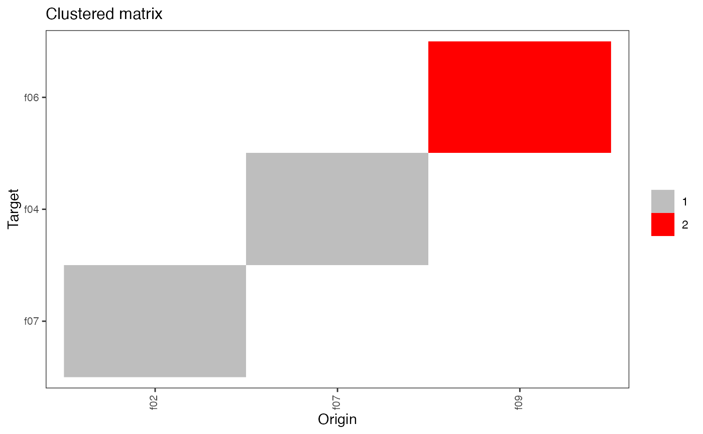
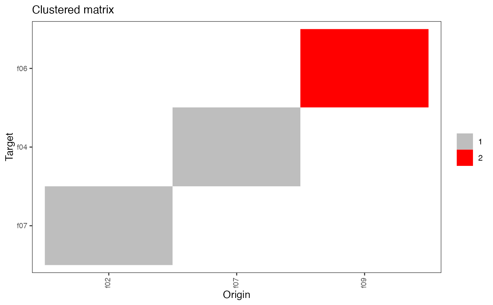

Class providing the HospiNet object with its methods
Class providing the HospiNet object with its methods
Format
R6::R6Class object.
Value
Object of R6::R6Class with methods for accessing facility networks.
Methods
new(edgelist, window_threshold, nmoves_threshold, noloops)This method is used to create an object of this class with
edgelistas the necessary information to create the network. The other argumentswindow_threshold,nmoves_threshold, andnoloopsare specific to theedgelistand need to be provided. For ease of use, it is preferable to use the functionhospinet_from_subject_database().print()This method prints basic information about the object.
plot(type = "matrix")This method plots the network matrix by default. The argument
typecan take the following values:- matrix
plot the network matrix,
- clustered_matrix
identify and plot cluster(s) in the matrix using the infomap algorithm (from igraph),
- degree
plot the histogram of the number of neighbors by facility,
- circular_network
plot the network by clusters using a "spaghetti-like" layout. Only works when there are at least 2 clusters.
Active bindings
edgelist(data.table) the list of edges (origin, target) and their associated number of movements (N) (read-only)
edgelist_long(data.table) edgelist with additional information (read-only)
matrix(matrix) the transfer matrix (active binding, read-only)
igraph(igraph) the igraph object corresponding to the network (active binding, read-only)
n_facilitiesthe number of facilities in the network (read-only)
n_movementsthe total number of subject movements in the network (read-only)
window_thresholdthe window threshold used to compute the network (read-only)
nmoves_thresholdthe nmoves threshold used to compute the network (read-only)
noloopsTRUE if loops have been removed (read-only)
hist_degreeshistogram data of the number of connections per facility
LOSPerHospthe mean length of stay for each facility (read-only)
admissionsPerHospthe number of admissions to each facility (read-only)
subjectsPerHospthe number of unique subjects admitted to each facility (read-only)
degreesnumber of connections for each facilities (total, in, and out)(read-only)
closenesssthe closeness centrality of each facility (read-only)
betweennesssthe betweenness centrality of each facility (read-only)
cluster_infomapthe assigned community for each facility, based on the infomap algorithm (read-only)
cluster_fast_greedythe assigned community for each facility, based on the greedy modularity optimization algorithm (read-only)
hubs_globalKleinberg's hub centrality scores, based on the entire network (read-only)
hubs_infomapsame as hubs_global, but computed per community based on the infomap algorithm (read-only)
hubs_fast_greedysame as hubs_global, but computed per community based on the infomap algorithm (read-only)
metricsTable(data.table) all of the above metrics for each facility (read-only)
Methods
Method new()
Create a new HospiNet object.
Usage
HospiNet$new(
edgelist,
edgelist_long,
window_threshold,
nmoves_threshold,
noloops,
prob_params,
fsummary = NULL,
create_MetricsTable = FALSE
)Arguments
edgelistShort format edgelist
edgelist_longLong format edgelist
window_thresholdThe window threshold used to compute the network
nmoves_thresholdThe nmoves threshold used to compute the network
noloopsTRUE if loops have been removed
prob_paramsCurrently unused
fsummaryA pre-built data.table with the LOSPerHosp, subjectsPerHosp and admissionsPerHosp that don't need to be recomputed.
create_MetricsTableall of the metrics for each facility
Method print()
Prints a basic description of the number of facilities and movements of a HospiNet object.
Method plot()
Plots various representations of the HospiNet network
Examples
mydbsmall <- create_fake_subjectDB(n_subjects = 100, n_facilities = 10)
hn <- hospinet_from_subject_database(
base = checkBase(mydbsmall),
window_threshold = 10,
count_option = "successive",
condition = "dates"
)
#> Checking for missing values...
#> Checking for duplicated records...
#> Removed 0 duplicates
#> Done.
#> Warning: Cluster(s) clust_2, clust_1 have only one member
hn
#> 2 facilities and 1 movements.
#> Movement window is 10 days.
#> Constructing full matrix
#> f09 f10
#> f09 0 0
#> f10 1 0
plot(hn)
 plot(hn, type = "clustered_matrix")

plot(hn, type = "clustered_matrix")
